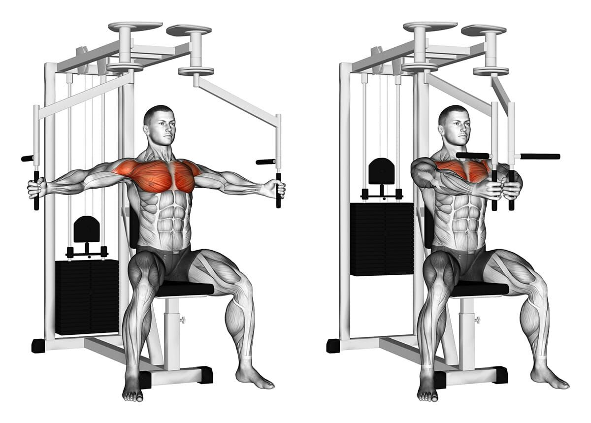
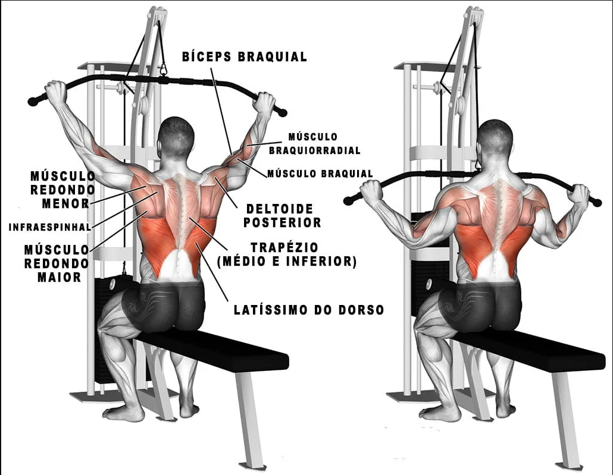
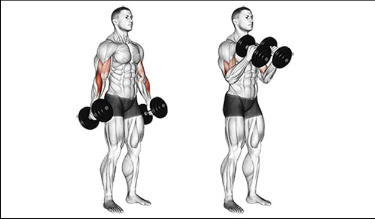
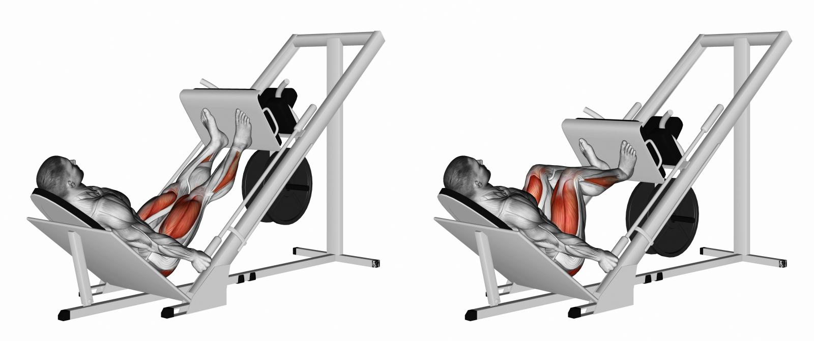
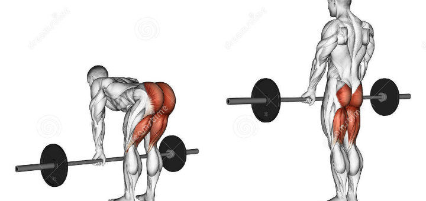

Treinos

Peck Deck
Trabalha toda a área do peitoral, desde o músculo peitoral maior até os
menores dando uma ênfase em definição, alongamento e ganho de força

Puxada Frontal
Ao realizar a fase concêntrica do exercício os principais movimentos são a
adução dos ombros, sendo desta forma o latíssimo do dorso o músculo mais
solicitado.

Biceps Martelo
Por causa da posição do punho, a porção longa acaba sendo mais solicitada.
A porção longa do bíceps é aquela mais lateralizada. A porção mais medial
é a curta.

Leg Press
Os principais músculos envolvidos no leg press 45 são o quadríceps, com a
participação do glúteo máximo também durante sua execução.

Stiff
O stiff é um exercício multiarticular aliado para trabalhar o core, além
do posterior de coxas e o bumbum.